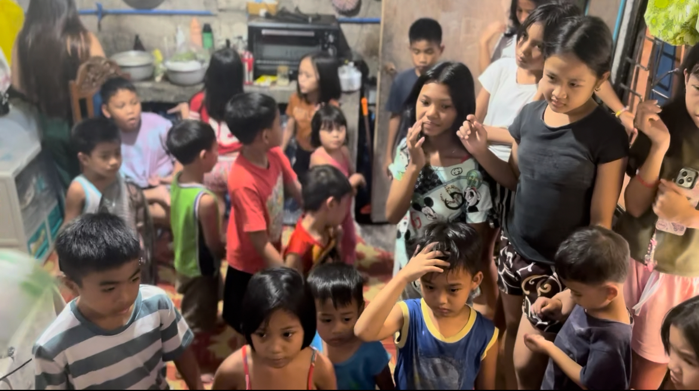

Children's Church
On my very first trip to the Philippines, my only intention was to meet the incredible woman I had been talking to for over three years. We began our conversations shortly after COVID began, when [...]
I should say here that the only thing I hate more than hot weather is hot humid weather. I love the four seasons of Ohio and couldn’t imagine living in a country with only two: hot and [...]
They seemed to love me instantly. Whenever I returned from town, I could hear them shouting as I walked back into the barangay. To be fair, the only word I really understood was “Santa,” which[...]

There is no such thing as privacy in our Filipino home. I would be sitting at the kitchen table, reading, and hear a tiny voice say, “Hi Santa.” Looking up, I’d see two to six children peeri[...]
When I returned to the States, I couldn’t get those precious souls off my mind. I prayed and wept for them, their faces vivid in my memory. By the time I returned the next year, I knew I was cal[...]

That first night, twelve children showed up. I read them Bible stories from books I’d brought for that purpose, and we sang the old Sunday School songs—“Jesus Loves Me,” “Father Abraham,[...]
Before long, our little living room was packed with thirty-six children every night. Fifteen minutes before start time, the sound of squealing kids would grow louder outside our door. When Dave or[...]

What began with a few curious faces at the window became the beating heart of our mission in the Philippines. And this is just the beginning of what God has planned as we follow His will for this [...]
“But Jesus said, Suffer little children, and forbid them not, to come unto me: for of such is the kingdom of heaven.” — Matthew 19:14 (KJV)